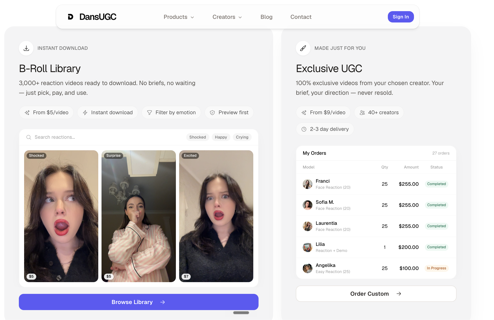

DansUGC built a solid reputation for authentic, human-first video production. But for performance marketers running dozens of hook variations monthly, its per-video pricing and custom-order workflow create a real throughput problem. Here are the four best alternatives — with fully transparent pricing and faster creative delivery.
DansUGC's production model shines for one-off, polished executions. The friction shows the moment you need to move fast or scale volume.

UGCDrop solves the core problem with DansUGC's model: waiting. It maintains a live, searchable library of over 100,000 real human creator clips — reactions, scroll-stopping hooks, unboxing moments, and B-roll footage — ready to filter, preview, and download instantly. No brief, no creator logistics, no production queue.
Where DansUGC charges from $8 per custom video, UGCDrop's Pro plan delivers 30 real human clip downloads for $28/month ($0.93/clip). For teams running weekly creative splits, that difference compounds fast. The Unlimited Plan at $49/month unlocks 100 downloads and unlimited access to the full 100k+ B-roll library.
Billo is a creator marketplace connecting brands with a large pool of vetted UGC creators. Unlike DansUGC's tighter, curated roster, Billo offers a wider range of creator profiles at varying price points, giving brands more flexibility in matching creator demographics to their audience.
The trade-off is that quality can be uneven across individual creators, and the per-video model still requires production lead time — it does not solve the instant-access problem. There is no searchable pre-shot clip library, no B-roll library, and no built-in ad studio.
Billo is a reasonable upgrade from DansUGC if creator variety and lower per-video price floors are priorities. But it shares the same structural constraint: production-based, wait-for-delivery workflow. UGCDrop is the stronger choice for volume testing and same-day ad launches. At $59/video minimum on Billo, UGCDrop's $0.93/clip math is dramatically more efficient.
Trend focuses on brand safety and premium creator vetting, making it the right pick for established brands that need consistent quality alongside authenticity. Content goes through a more rigorous production pipeline than DansUGC or Billo, which translates to stronger creative quality — and higher cost.
Pricing starts at bundle tiers around $550, positioning Trend firmly in the mid-market and enterprise bracket. Its creative process prioritizes polish over speed, and it operates as a fully managed service rather than a self-serve platform.
Trend is a solid choice for brand campaigns and hero-content productions where quality standards are non-negotiable. For performance marketers needing dozens of hook variations at low cost, Trend's bundle pricing and production timelines create the same bottlenecks as DansUGC — at a significantly higher budget floor. UGCDrop's instant library is purpose-built for the opposite use case.
Insense blends UGC production with influencer collaboration and managed campaign services. It offers end-to-end creative support — from brief writing to creator matching to delivery review — which makes it valuable for brands that want a production partner rather than a self-serve tool. Its creator roster spans both pure UGC creators and influencer accounts, giving brands reach beyond pure ad creative.
The cost structure is layered: platform subscription fees ($300–$500/month), individual creator payments, and a 10–20% marketplace fee on top. This makes Insense one of the more expensive options in the UGC space once total costs are tallied.
Insense makes sense for brands running long-form influencer integrations alongside UGC ad creative — the managed service model adds value when creative strategy and coordination are genuinely delegated. For growth teams and media buyers who want raw creative assets fast without a production overhead cost, UGCDrop's $28/month entry point and instant library access are far more operationally appropriate.
| Rank | Tool | Best for | Pricing from | Instant Access? |
|---|---|---|---|---|
| 1 | UGCDrop | Instant library access & volume ad testing | $28/mo (30 downloads) or $1.69/credit | Yes — instant download |
| 2 | Billo | Creator marketplace with broad talent pool | From $59/video | No — production queue |
| 3 | Trend | Brand-safe UGC with strong vetting | Bundles from ~$550 | No — managed production |
| 4 | Insense | Managed UGC + influencer integration | $300–$500/mo + creator fees + 10–20% fee | No — managed service |

Access UGCDrop's instant library of 100k+ real human creator clips — no briefs, no lead time, no per-video fees.
Start Sourcing Free